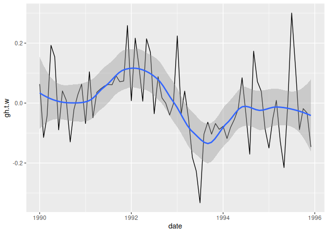

metR packages several functions and utilities that make R better for handling meteorological data in the tidy data paradigm. It started mostly sa a packaging of assorted wrappers and tricks that I wrote for my day to day work as a researcher in atmospheric sciences. Since then, it has grown organically and for my own needs and feedback from users.
Conceptually it’s divided into visualization tools and data tools. The former are geoms, stats and scales that help with plotting using ggplot2, such as stat_contour_fill() or scale_y_level(), while the later are functions for common data processing tools in the atmospheric sciences, such as Derivate() or EOF(); these are implemented to work in the data.table paradigm, but also work with regular data frames.
Currently metR is in development but maturing. Most functions check arguments and there are some tests. However, some functions might change it’s interface, and functionality can be moved to other packages, so please bear that in mind.
Installation
You can install metR from CRAN with:
install.packages("metR")Or the development version with:
if (!requireNamespace("pak", quietly = TRUE)) {
install.packages("pak")
}
pak::pak("metR")If you need to read netcdf files, you might need to install the netcdf and udunits2 libraries. On Ubuntu and it’s derivatives this can be done by typing
Citing the package
If you use metR in your research, please consider citing it. You can get citation information with
citation("metR")
#> To cite metR in publications use:
#>
#>
#>
#> A BibTeX entry for LaTeX users is
#>
#> @Manual{,
#> title = {metR: Tools for Easier Analysis of Meteorological Fields},
#> author = {Elio Campitelli},
#> year = {2021},
#> note = {R package version 0.18.0},
#> url = {https://eliocamp.github.io/metR/},
#> doi = {10.5281/zenodo.2593516},
#> }Examples
In this example we easily perform Principal Components Decomposition (EOF) on monthly geopotential height, then compute the geostrophic wind associated with this field and plot the field with filled contours and the wind with streamlines.
library(metR)
library(data.table)
library(ggplot2)
data(geopotential)
# Use Empirical Orthogonal Functions to compute the Antarctic Oscillation
geopotential <- copy(geopotential)
geopotential[, gh.t.w := Anomaly(gh)*sqrt(cos(lat*pi/180)),
by = .(lon, lat, month(date))]
aao <- EOF(gh.t.w ~ lat + lon | date, data = geopotential, n = 1)
aao$left[, c("u", "v") := GeostrophicWind(gh.t.w/sqrt(cos(lat*pi/180)),
lon, lat)]
# AAO field
binwidth <- 0.01
ggplot(aao$left, aes(lon, lat)) +
geom_contour_fill(aes(z = gh.t.w/sqrt(cos(lat*pi/180)),
fill = after_stat(level)), binwidth = binwidth,
xwrap = c(0, 360)) +
geom_streamline(aes(dx = dlon(u, lat), dy = dlat(v)),
linewidth = 0.4, L = 80, skip = 3, xwrap = c(0, 360)) +
scale_x_longitude() +
scale_y_latitude(limits = c(-90, -20)) +
scale_fill_divergent_discretised(name = "AAO pattern") +
coord_polar()
#> Warning in .check_wrap_param(list(...)): 'xwrap' and 'ywrap' will be
#> deprecated. Use ggperiodic::periodic insead.
# AAO signal
ggplot(aao$right, aes(date, gh.t.w)) +
geom_line() +
geom_smooth(span = 0.4)
#> `geom_smooth()` using method = 'loess' and formula = 'y ~ x'
You can read more in the vignettes: Visualization tools and Working with data.